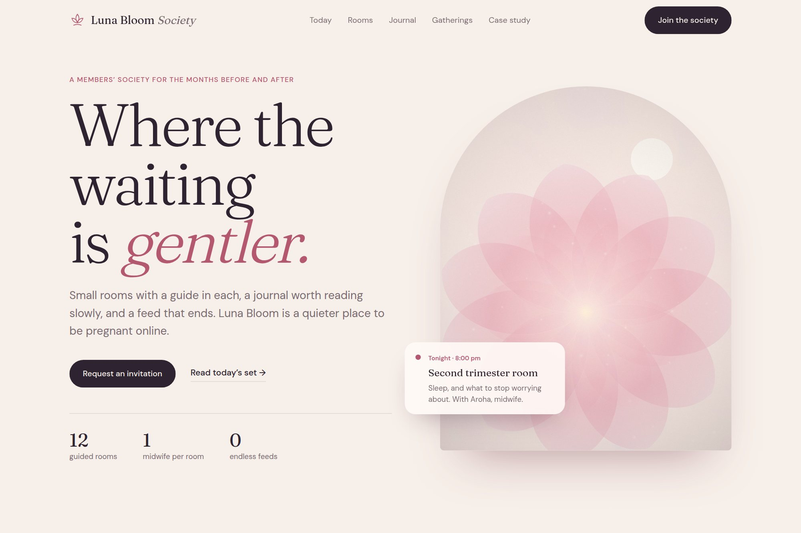

04 — Community platform
Softness as a design system.
A maternity community concept built to hold long-form editorial and peer conversation without the pull of an endless feed.

- Type
- Concept · self-directed
- Discipline
- Web · UI · Brand
- Deliverables
- Feed, community rooms, editorial studio, events
- Duration
- 6 weeks
01The brief
Luna Bloom Society asked for a digital home that feels like a held breath: calm, luminous and intimate. Maternity platforms default to high-volume social mechanics, and the brief ruled those out from the start.
The problem was structural rather than visual — how to run a community without infinite scroll, open comment threads or engagement counters, and still give members a reason to return.
02Design decisions
- Stories arrive in small, complete sets. Ending the page is a feature: members leave calm rather than drained.
- Open comment threads were replaced by small trimester rooms with a guide present, so conversation stays high-touch.
- Long-form journal pieces lead the experience, so the brand earns trust before it asks for membership.
03Outcome
A complete concept — feed, community rooms, editorial studio and events — expressed in one design language across twelve component families, ready to extend into a full product build.
A concept project designed in-house by Yonder Tech, not a client engagement. Figures describe the delivered design system, not commercial results.